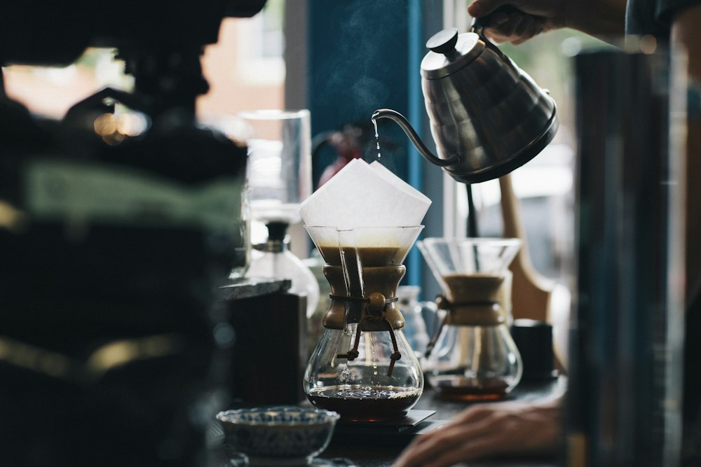
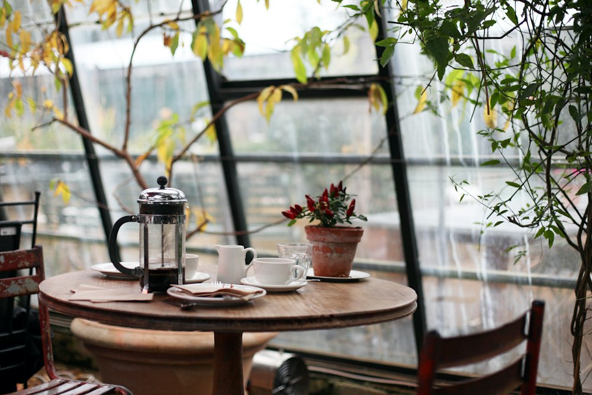

Nossa origem sustentável
Acreditamos que um grande café começa no respeito à terra. Trabalhamos exclusivamente com produtores locais e práticas de agricultura regenerativa, garantindo grãos 100% orgânicos, de comércio justo e extração impecável.
Cursos de cafés especiais
Aprenda a escolher os grãos, preparar diferentes métodos de extração e reconhecer aromas e sabores. Conheça nossos cursos para todos os níveis.
Conhecer cursos pelo WhatsApp
O que dizem nossos clientes
"O melhor espresso da região! Sem contar o ambiente que é perfeito para trabalhar remotamente tomando um café impecável."
— Mariana Souza, Desenvolvedora Front-End"Fiz o workshop de barista iniciante e amei a didática. O cuidado com a sustentabilidade e a qualidade dos grãos faz toda a diferença."
— Lucas Almeida, Designer"Atendimento rápido pelo WhatsApp e entrega do café em grãos sempre fresquinho em casa. Sou cliente fiel!"
— Beatriz Lima, ArquitetaFique por dentro das novidades
Cadastre o seu e-mail para receber descontos exclusivos e avisos sobre novos lotes de cafés especiais.